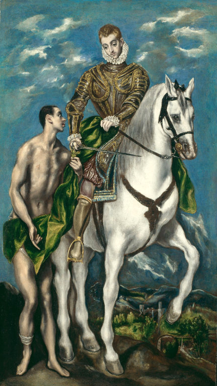
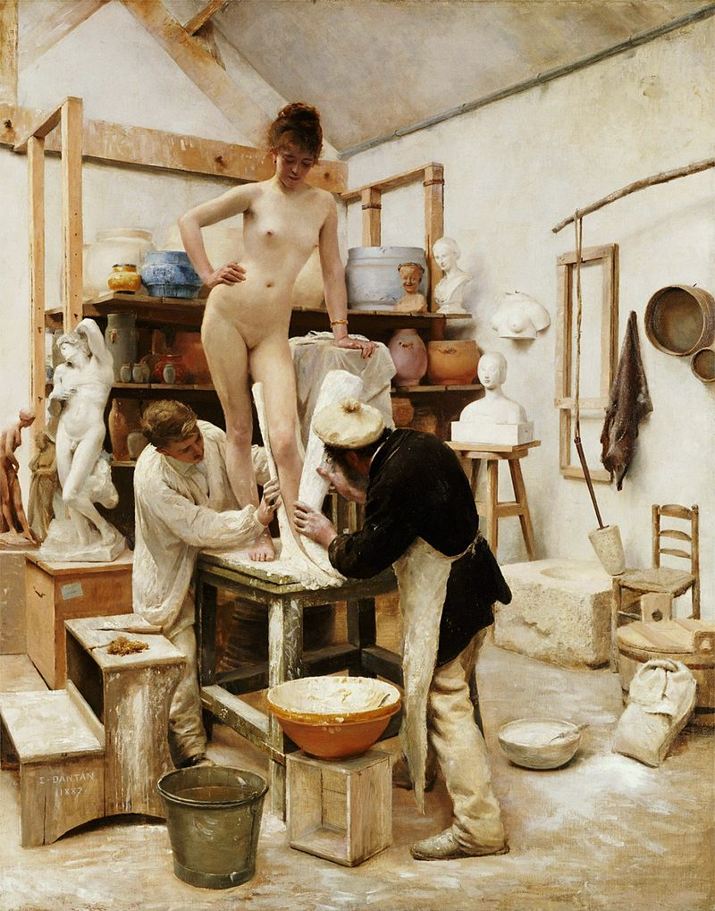
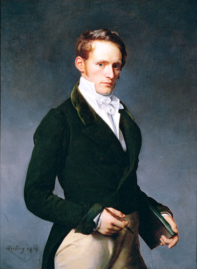

<html>
<head>
<title>我的第3頁 館藏 </title>
</head>
	
<body bgcolor="#99ccAA" text="000000">
<center>
 <div>

<audio src="hank.mp3" controls autoplay />

</div>  
</body>
</html>

<html>
<head>
<body>

<center>

<a href="index.html">連到首頁 奇美博物館</a>

<a href="2nd.html">連到第2頁 創辦人</a>

<a href="4page.html">連到第4頁 網際網路心得</a>

<br>


 <br>



<br>
<font face ="標楷體">
西洋藝術 <br>
奇美博物館的藝術收藏以<i>西方油畫、雕塑為主</i>，<br><u>自1988年開始有系統地廣泛蒐藏藝術史上各流派的作品，包含古羅馬帝國的馬賽克藝術、文藝復興、巴洛克、洛可可、新古典主義、浪漫主義及後印象派等派別的經典之作。 </u><br>
其中收藏最為豐富的是十九世紀法國的繪畫與雕塑。<br>


     
</font>
</center>

</body>
</html>
